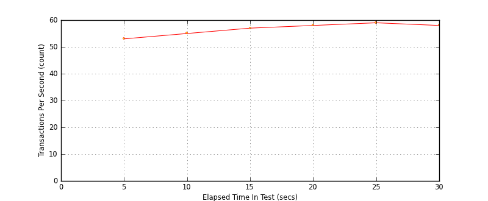
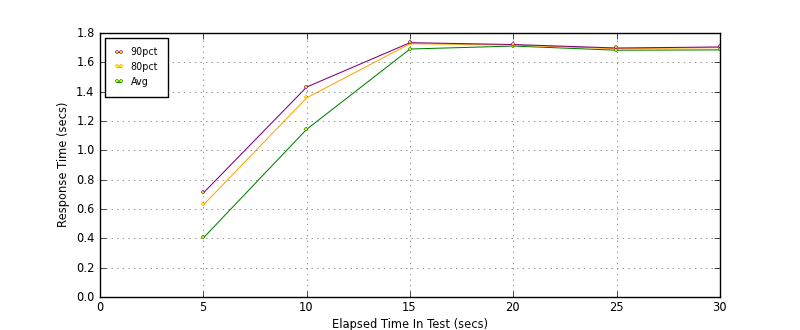
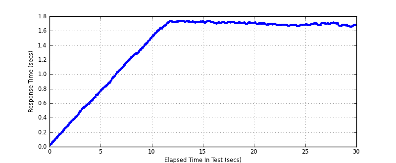

Performance Results Report
Summary
transactions: 1822
errors: 0
run time: 30 secs
rampup: 10 secs
test start: 2014-01-24 11:04:08
test finish: 2014-01-24 11:04:38
time-series interval: 5 secs
workload configuration:
| group name | threads | script name |
|---|
| user_group-1 | 100 | read_user.py |
All Transactions
Transaction Response Summary (secs)
| count | min | avg | 80pct | 90pct | 95pct | max | stdev |
|---|
| 1822 | 0.020 | 1.402 | 1.710 | 1.721 | 1.726 | 1.738 | 0.490 |
Interval Details (secs)
| interval | count | rate | min | avg | 80pct | 90pct | 95pct | max | stdev |
|---|
| 1 | 269 | 53.80 | 0.020 | 0.403 | 0.628 | 0.709 | 0.734 | 0.778 | 0.218 |
| 2 | 279 | 55.80 | 0.776 | 1.143 | 1.358 | 1.432 | 1.471 | 1.520 | 0.214 |
| 3 | 289 | 57.80 | 1.517 | 1.691 | 1.727 | 1.734 | 1.736 | 1.738 | 0.059 |
| 4 | 293 | 58.60 | 1.694 | 1.711 | 1.718 | 1.722 | 1.728 | 1.731 | 0.008 |
| 5 | 298 | 59.60 | 1.657 | 1.683 | 1.693 | 1.698 | 1.700 | 1.712 | 0.011 |
| 6 | 294 | 58.80 | 1.652 | 1.685 | 1.700 | 1.705 | 1.707 | 1.713 | 0.015 |
Graphs
Response Time: 5 sec time-series
Response Time: raw data (all points)
Throughput: 5 sec time-series

Custom Timer: get_tweets
Timer Summary (secs)
| count | min | avg | 80pct | 90pct | 95pct | max | stdev |
|---|
| 1722 | 0.020 | 1.402 | 1.710 | 1.721 | 1.726 | 1.738 | 0.490 |
Interval Details (secs)
| interval | count | rate | min | avg | 80pct | 90pct | 95pct | max | stdev |
|---|
| 1 | 269 | 53.80 | 0.020 | 0.403 | 0.627 | 0.709 | 0.734 | 0.777 | 0.218 |
| 2 | 279 | 55.80 | 0.776 | 1.143 | 1.358 | 1.432 | 1.471 | 1.520 | 0.214 |
| 3 | 289 | 57.80 | 1.517 | 1.691 | 1.727 | 1.734 | 1.736 | 1.738 | 0.059 |
| 4 | 293 | 58.60 | 1.694 | 1.711 | 1.717 | 1.721 | 1.727 | 1.731 | 0.008 |
| 5 | 298 | 59.60 | 1.657 | 1.683 | 1.693 | 1.698 | 1.700 | 1.712 | 0.011 |
| 6 | 294 | 58.80 | 1.652 | 1.685 | 1.700 | 1.705 | 1.707 | 1.712 | 0.015 |
Graphs
Response Time: 5 sec time-series

Response Time: raw data (all points)

Throughput: 5 sec time-series